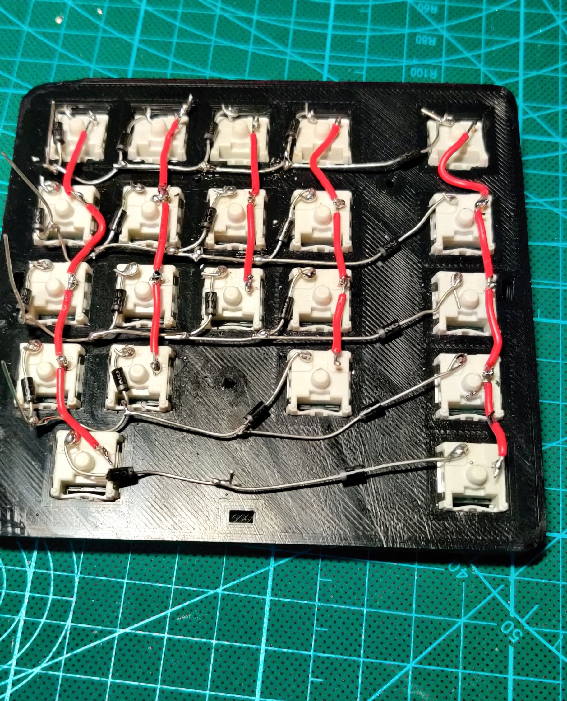
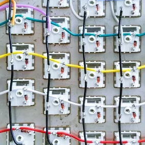

Handwire Tutorial
Required Materials
♪ Key Switches ♪
♪ Wire ♪
♪ Diodes ♪
♪ Microcontroller ♪
♪ Solder ♪
♪ Soldering Iron ♪
Instructions
My instructions are vague and unclear, until i polish them up please follow: this lovely guide!
Using the diagram of the wiring and the pro micro pinout (check the firmware tutorial here), begin to wire the key switches, keep in mind the diodes go on the rows, from the pro micro to the switches, and with the side of the diode with the bar closer to the micro. also if you are looking directly at the bottom of a switch, you solder the rows to the right side and the columns up and down
i also usually flash the micro before i solder, just a preference so now to flashing
sike actually you got to put the diodes differently, with the line away from the key switch like before but connected past the diode
(sorry if this is bad ill try and make diagrams to back this up soon)

